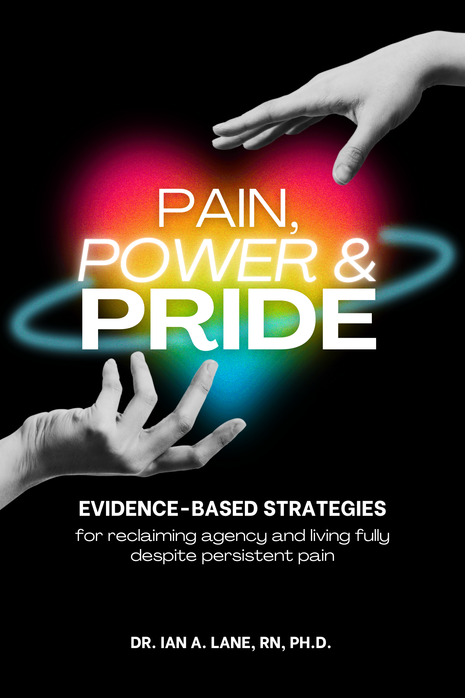

An evidence-based guide for LGBTQ people living with persistent pain offering practical strategies to reclaim agency, navigate care, and live more fully.
Written by Ian A. Lane, RN, Ph.D. - Clinical pain scientist and board-certified pain management nurse consultant.

Persistent pain is not just physical. For LGBTQ people, pain can intersect with stigma, trauma, and healthcare mistrust. This book helps you navigate those intersections with clarity and compassion.
Break the cycle of internalizing pain as a personal failure or purely psychological.
Concrete tools to communicate effectively with providers and demand affirming care.
Strategies for identity, pleasure, and work that respect your limits without losing your soul.
How persistent pain works in the body, brain, and social context
How stigma and invalidation can shape pain experiences
How to build pacing, coping, and self-management strategies
How to reclaim identity, pleasure, and meaning while living with pain
Ian A. Lane, PhD, RN, PMGT-BC, is a nursing epidemiologist, measurement scientist, and board-certified pain management nurse consultant. His work focuses on chronic pain, behavioral health, and LGBTQ health disparities.
Dr. Lane is especially interested in how persistent pain intersects with identity and healthcare experiences among LGBTQ people. He maintains an independent clinical practice focused on supporting individuals living with chronic pain and behavioral health challenges.
Pain, Power, and Pride offers a compassionate path toward reclaiming agency even when pain persists.